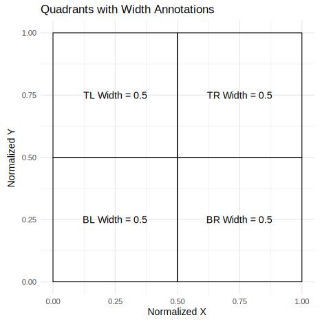

library(remotes) # install github repo
remotes::install_github("jgeller112/webgazeR")Language Without Borders: A Step-by-Step Guide to Analyzing Webcam Eye-Tracking Data for L2 Research
Jason Geller1, Yanina Prystauka2, Sarah Colby3, and Julia Droulin4
1Department of Psychology and Neuroscience, Boston College
2Department of Psychology and Neuroscience, University of Bergen
3Department of Psychology and Neuroscience, University of Ottowa
4Department of Psychology and Neuroscience, University of North Carolina at Chapel Hill
Author Note
Jason Geller  http://orcid.org/0000-0002-7459-4505
http://orcid.org/0000-0002-7459-4505
Yanina Prystauka  http://orcid.org/0000-0000-0000-0002
http://orcid.org/0000-0000-0000-0002
Sarah Colby  http://orcid.org/0000-0000-0000-0003
http://orcid.org/0000-0000-0000-0003
Julia Droulin  http://orcid.org/0000-0000-0000-0003
http://orcid.org/0000-0000-0000-0003
This study was not preregistered. The data and code can be found at https://github.com/jgeller112/L2_VWP_Webcam. The authors have no conflicts of interest to disclose.
Author roles were classified using the Contributor Role Taxonomy (CRediT; https://credit.niso.org/) as follows: Jason Geller: conceptualization, writing – original draft, data curation, writing – review & editing, software, and formal analysis. Yanina Prystauka: writing – original draft, writing – review & editing, and formal analysis. Sarah Colby: writing – original draft and writing – review & editing. Julia Droulin: conceptualziation, writing – original draft, writing – review & editing, and funding acquisition
Correspondence concerning this article should be addressed to Jason Geller, Department of Psychology and Neuroscience, Boston College, Mcguinn Hall 405, Chestnut Hill, MA 02467-9991, USA, drjasongeller@gmail.com: jason.geller@bc.edu
Abstract
Eye-tracking has become a valuable tool for studying cognitive processes in second language (L2) acquisition and bilingualism (Godfroid et al., 2024). While research-grade infrared eye-trackers are commonly used, there are a number of issues that limit its wide-spread adoption. Recently, consumer-based webcam eye-tracking has emerged as an attractive alternative, requiring only internet access and a personal webcam. However, webcam eye-tracking presents unique design and preprocessing challenges that must be addressed for valid results. To help researchers overcome these challenges,we developed a comprehensive tutorial focused on visual world webcam eye-tracking for L2 langauge research. Our guide will cover all key steps, from experiment design to data preprocessing and analysis, where we highlight the R package webgazeR, which is open source and freely available for download and installation: https://github.com/jgeller112/webgazeR. We offer best practices for environmental conditions, participant instructions,and tips for designing visual world experiments with webcam eye-tracking. To demonstrate these steps, we analyze data collected through the Gorilla platform (Anwyl-Irvine et al., 2020) using a single word Spanish visual world paradigm (VWP) and show competeiton within and between L2/L1. This tutorial aims to empower researchers by providing a step-by-step guide to successfully conduct visual world webcam-based eye-tracking studies. To follow along with this tutorial, please download the entire manuscript and its accompaying code with data from here: https://github.com/jgeller112/L2_VWP_Webcam.
Keywords: VWP, Tutorial, Webcam eye-tracking, R, Gorilla
Language Without Borders: A Step-by-Step Guide to Analyzing Webcam Eye-Tracking Data for L2 Research
Eye-tracking technology, which has a history spanning over a century, has seen remarkable advancements. In the early days, eye-tracking sometimes required the use of contact lenses fitted with search coils, often requiring anesthesia, or the attachment of suction cups to the sclera of the eyes (Płużyczka, 2018). These methods were not only cumbersome for the researcher, but also uncomfortable and invasive for participants. Over time, such approaches have been replaced by non-invasive, lightweight, and user-friendly systems. Today, modern eye-tracking technology is widely accessible in laboratories worldwide, enabling researchers to tackle critical questions about cognitive processes . This evolution has had a profound impact on fields such as psycholinguistics and bilingualism opening up new possibilities for understanding how language is processed in real time (Godfroid et al., 2024).
Despite its widespread usage, eye-tracking technology faces several obstacles that can limit its accessibility. One significant challenge is the specialized expertise required to operate research-grade eye-trackers. Proper usage often demands many hours of training, meaning most research must be conducted in a lab by a trained student or faculty member. Another major limitation is the cost. Eye-trackers can be prohibitively expensive, ranging from a few thousand dollars (e.g., Gazepoint; www.gazept.com) to tens of thousands of dollars (e.g., Tobii (www.tobii.com; SR Research (www.sr-research.com). As a result, not everyone possess the resources, or the time, to incorporate eye-tracking into their research program.
In addition, eye-tracking research often requires participants to visit a laboratory, which significantly limits the diversity of the sample or population researchers can recruit. Behavioral science research, in general, frequently suffers from a lack of diversity, relying heavily on participants who are predominantly Western, Educated, Industrialized, Rich, Democratic, and able-bodied (WEIRDA). This focus often excludes individuals from geographically dispersed areas, those from lower socioeconomic backgrounds, and people with disabilities who may face barriers to accessing research facilities. In language research, this issue is particularly evident, as it often prioritizes English-speaking, monolingual, populations (Blasi et al., 2022; Bylund et al., 2024) and largely includes individuals with normal developing language abilities (McMurray et al., 2010). These limitations not only narrow the populations available for study but also compromise the generalizability and applicability of research findings.
Eye-tracking outside the lab
Methods that allow participants to use their own equipment from anywhere in the world offer a potential solution to the issues outlined above, enabling researchers to recruit more diverse and disadvantaged samples and explore a broader range of questions (Gosling et al., 2010). The shift toward online behavioral experiments has been gradually increasing in the behavioral sciences and has become every more important since the 2020 pandemic, which forced many of us to run studies online (Anderson et al., 2019; Rodd, 2024). The onlineification of behavioral research has prompted the development of eye-tracking methods that do not rely on traditional lab settings.
One method, manual eye-tracking (Trueswell, 2008), involves using video recordings of participants, which can be collected through online teleconferencing platforms such as Zoom (www.zoom.com). Here eye gaze (direction) is manually analyzed post-hoc frame by frame from these recordings.
Another method, which is the focus of this tutorial, is automated eye-tracking or webcam eye-tracking. Webcam eye-tracking requires three things: 1. A personal computer. 2. An internet connection and 3. A purchased or pre-installed webcamera. Gaze information can be collected via a web browser. One common method to perform webcam eye-tracking is through an open source, free, and actively maintained JavaScript library plugin called WebGazer.js (Papoutsaki et al., 2016). This plugin is already incorporated into several popular experimental platforms [e.g., Gorilla, jsPsych, PsychoPy, and PCIbex; Anwyl-Irvine et al. (2020); Peirce et al. (2019); Leeuw (2015); Zehr and Schwarz (2018)]. A benefit of WebGazer.js is that it does not require users to download any software, and is fully integrated in the browser, making it extremely easy to start webcam eye-tracking.
WebGazer.js uses facial feature detection to dynamically estimate gaze positions in real time via webcam. For every time point (based on sampling rate), x and y coordinates are recorded. WebGazer.js leverages machine learning to analyze the relative movement of the eyes and infer gaze location on a screen. To imporve accuracy, a calibration process is used in which users interaction with visual stimuli, such as looking at and clicking random dots or tracking a moving dot. This mapping process enhances the precision of the gaze-to-screen-coordinate relationship
It is important to note that WebGazer.js is not the only method available. Other methods have been implemented by companies like Tobii (www.tobii.com) and Labvanced (Kaduk et al., 2024) . However, because these methods are proprietary, it is unclear what they are doing under the hood.
The algorithms underlying webcam-based eye tracking differ significantly from those used in research-grade eye trackers. Research-grade systems employ video-based recording and rely on the pupil-corneal reflection (P-CR) method to track gaze with high precision (Carter & Luke, 2020). This method utilizes infrared light to illuminate the eyes, capturing reflections (known as glints) from the cornea and pupil. High-speed cameras simultaneously capture images at rates of hundreds or thousands of frames per second to measure eye position. By combining data from the corneal reflections and pupil location, these systems calculate gaze direction and position. Proprietary algorithms then map this information to specific locations on the screen.
This leads to an important question: how does consumer-grade webcam eye tracking compare to research-grade systems? While validation studies are ongoing, webcam-based eye trackers generally exhibit reduced spatiotemporal accuracy. Studies have reported that these systems achieve spatial accuracy and precision exceeding 1° of visual angle, with latencies ranging from 200 ms to 1000 ms (Kaduk et al., 2024; Semmelmann & Weigelt, 2018; Slim et al., 2024; Slim & Hartsuiker, 2023). Furthermore, the sampling rate of webcam-based systems is much lower, typically capped at 60 Hz, with most studies reporting average or median rates around 30 Hz (Bramlett & Wiener, 2024; Prystauka et al., 2024). Unlike research-grade systems, webcam eye trackers do not use infrared light; instead, they rely on ambient light from the participant’s environment. This dependency introduces additional variability in tracking performance.
To compare, research-grade systems like the Tobii Pro Spectrum provides spatial precision of 0.03°–0.06° RMS, spatial accuracy of <0.3°, and latency of less than 2.5 ms, with a sampling rate of up to 1200 Hz (AB, 2024; Nyström et al., 2021). These advanced metrics make research-grade systems ideal for studies requiring high temporal and spatial resolution.
Bringing the visual world paradigm online
Despite the differences between research-grade and consumer grade eye-tracking, a number of studies have begun to look at if lab-based results replicate online using webcam eye-tracking. Most relevant to this tutorial are online replications using the VWP (Tanenhaus et al., 1995; cf. Cooper, 1974). For the past 25 years, the VWP has been a dominant force in language research, helping researchers tackle a wide range of topics, including sentence processing (Eberhard et al., 1995), word recognition (Allopenna et al., 1998), bilingualism (Ito et al., 2018), and the effects of brain damage on language (Mirman & Graziano, 2012).
What makes the widespread use of the VWP even more remarkable is the simplicity of the task. In a typical VWP experiment, participants view a display containing several objects and are asked to select one of them by pointing or clicking. While they listen to a spoken word or phrase that identifies the target object, their eye movements are recorded. Remarkably, looks to each object align very closely—and with precise timing—with the mental activation of the word or concept it represents. This provides a unique and detailed view of how cognitive processes unfold in real time.
Most research on visual world eye-tracking has been conducted in laboratory settings using research-grade eye-trackers. However, several attempts have been made to conduct these experiments online using webcam-based eye-tracking. Most online VWP replications have focused on sentence-based language processing. These studies have looked at effects of set size and determiners (Degen et al., 2021), verb semantic constraint (Prystauka et al., 2024; Slim & Hartsuiker, 2023), grammatical aspect and event comprehension (Vos et al., 2022), and lexical interference (Prystauka et al., 2024).
More relevant to the current paper are findings from single-word VWP studies conducted online. To date, only one study has investigated visual world webcam eye-tracking with single words. Slim et al. (2024) examined a phonemic cohort task. In the cohort task, pictures were displayed randomly in one of four quadrants, and participants were instructed to fixate on the target based on the auditory cue. On each trial, one of the pictures was phonemically similar to the target in onset (e.g., MILK – MITTEN).
They were able to observe significant fixations to the cohort compared to the control condition, replicating lab-based single word VWP experiments with research grade eye-trackers (e.g., Allopenna et al., 1998). However, Slim et al. (2024) only observed these competition effects in a later time window compared to remote eye-tracking.
It is important to note, however, that while these studies represent successful replication attempts, there is an important caveat. Most notably, some studies (Degen et al., 2021; Slim et al., 2024; e.g., Slim & Hartsuiker, 2023) reported considerable delays in the temporal onset of effects. Several factors likely contribute to these delays, including reduced spatial precision, computational demands, the size of areas of interest (AOIs), and the number of calibrations performed (Degen et al., 2021).
More recent work has addressed these limitations by utilizing am updated version of WebGazer.js and using different experimental platforms. 1For instance, Vos et al. (2022) demonstrated a significant reduction in delays—approximately 50 ms—when comparing lab-based and online versions of the VWP using an updated version of WebGazer within the jsPsych framework (Leeuw, 2015). Furthermore, studies by Prystauka et al. (2024) and Bramlett and Wiener (2024), which leveraged the Gorilla platform alongside the improved WebGazer algorithm, reported effects comparable to those observed in traditional lab-based VWP studies.
These findings underscore the potential of the online version of the VWP, powered by webcam eye-tracking, to achieve results similar to those of traditional lab-based methods. Importantly, they demonstrate that this approach can effectively be used to study competition effects in single-word speech perception
Tutorial
Taken together, it seems that webcam eye-tracking is viable alternative to lab-based eye-tracking. Given this, we aimed to support researchers in their efforts to conduct high-quality webcam eye-tracking studies with the VWP. While a valuable tutorial on webcam eye-tracking in the VWP already exists (Bramlett & Wiener, 2024), we believe there is value in having multiple resources available to researchers. To this end, we sought to expand on the tutorial by Bramlett and Wiener (2024) by incorporating many of their useful recommendations, but also offering an R package to help streamline data pre-processing.
The purpose of this tutorial is to provide an overview of the basic set-up and design features of an online VWP task using the Gorilla platform (Anwyl-Irvine et al., 2020) and to highlight the pre-processing steps needed to analyze webcam eye-tracking data. Here we use the popular open source programming language R and introduce the webgazeR package (Geller & Prystauka, 2024) to facilitate pre-processing of webcam data. To highlight the steps needed to process webcam eye-tracking data we present data from a Spanish spoken word VWP with L2 Spanish speakers. To our knowledge, L2 processing and competitor effects have not been looked at in the online version of the VWP.
The structure of the tutorial will be as follows. We first outline the general methods used to conduct a visual world webcam eye-tracking experiment. Next, we detail the data preprocessing steps required to prepare the data for analysis. Finally, we demonstrate one statistical approach for analyzing our preprocessed data, highlighting its application and implications.
L2 VWP Webcam Eye-tracking
To highlight the preprocessing steps required to analyze webcam eye-tracking data, we examined the competitive dynamics of second-language (L2) learners of Spanish during spoken word recognition. Specifically, we investigated both within-language and cross-language (L2/L1) competition using webcam-based eye-tracking.
It is well established that competition plays a critical role in language processing (Magnuson et al., 2007). In speech perception, as the auditory signal unfolds over time, competitors (or cohorts)—phonological neighbors that differ from the target by an initial phoneme—become activated. To successfully recognize the spoken word, these competitors must be inhibited or suppressed. For example, as the word wizard is spoken, cohorts like whistle might also be briefly activated and in order for wizard to be recognized, whistle must be suppressed.
A key question in the L2 literature is whether competition can occur cross-linguistically, with interactions between a speaker’s first language (L1) and second language (L2). A recent study by Sarrett et al. (2022) explored this question using carefully designed stimuli to examine within- and between linguistic (L2/L1) competition in adult L2 Spanish speakers learners using a Spanish VWP. Their study included two key conditions:
Spanish-Spanish condition: A Spanish competitor was presented alongside the target word. For example, if the target word spoken was “cielo” (sky), the Spanish competitor was “ciencia” (science).
Spanish-English (cross-linguistic) condition: An English competitor was presented for the Spanish target word. For example, if the target word spoken was “botas” (boots), the English competitor was “border.”
Sarrett et al. (2022) also included a no competition condition where the Spanish-English pairs were not cross-linguistic competitors (e.g., frontera as the target word and botas/boots as an unrelated item in the pair). They observed competition effects in both of the critical conditions: within-Spanish competition (e.g., cielo - ciencia) and cross-linguistic competition (e.g., botas - border). For this tutorial, we collected data to conceptually replicate their pattern of findings.
There are two key differences between our dataset and the original study by Sarrett et al. (2022) worth noting. First, Sarrett et al. (2022) focused on adult L2 Spanish speakers and posed more fine-grained questions about the time course of competition and resolution and its relationship with L2 language acquisition. Second, unlike McCall et al., who measured Spanish proficiency objectively (e.g., using LexTALE-esp; Izura et al. (2014) ), we relied on Prolific’s filters to recruit L2 Spanish speakers.
Our primary goal here was to demonstrate the pre-processing steps required to analyze webcam-based eye-tracking data. A secondary goal was to provide evidence of L2 competition within and between or cross-linguistically using this methodology. To our knowledge, no papers have looked at spoken word recognition and competition using online methods. It is our hope that researchers can use this to test more detailed questions about L2 processing using webcam-based eye-tracking.
Method
All tasks herein can be previewed here (https://app.gorilla.sc/openmaterials/953693). The manuscript, data, and R code can be found on Github (https://github.com/jgeller112/webcam_gazeR_VWP).
Participants
We recruited participants from Prolific, a participant recruitment platform, who where: (1) between the ages of 18 and 36 years old, (2) native English speakers, (3) were also fluent in Spanish, and (4) residents of the US. All participants were taken to the Gorilla hosting and experiment platform (www.gorilla.sc; (Anwyl-Irvine et al., 2020). The participant flow is shown in Figure 1. A total of 187 participants consented t participate in the study. Of these, 111 passed the headphone screener checkpoint and proceeded to the VWP. Among these, 32 participants successfully completed the Visual World Paradigm (VWP) task with at least 100 trials, while 79 participants failed calibration. Ninety-one participants completed the entire experiment, including the final questionnaires. Table 1 provides basic demographic information about the participants who completed the full experiment. After applying additional exclusion criteria (low accuracy (< 80%) and excessive missing eye-data (> 30%) , the final sample consisted of 28 participants with usable eye-tracking data.
Figure 1
Participant flow through the experiment

Table 1
Participant demographic variables

Materials
VWP.
Items.
We adapted materials from Sarrett et al. (2022). In their cross-linguistic VWP, participants were presented with four pictures and a spoken Spanish word and had to select the image that matched the spoken word by clicking on it. The word stimuli for the experiment were chosen from textbooks used by students in their first and second year college Spanish courses.
The item sets consisted of two types of phonologically-related word pairs: one pair of Spanish-Spanish words and another of Spanish-English words. The Spanish-Spanish pairs were unrelated to the Spanish-English pairs. All the word pairs were carefully controlled on a number of dimensions (see (Sarrett et al., 2022)).
There were three experimental conditions: (1) the Spanish-Spanish condition, where one of the Spanish words was the target and the other was the competitor; (2) the Spanish-English condition, where a Spanish word was the target and its English phonological cohort served as the competitor; and (3) the No Competitor condition, where the Spanish word did not overlap with any other word in the set. The Spanish-Spanish condition had twice as many trials as the other conditions due to the interchangeable nature of the target and competitor words in that pair.
There were 15 sets of 4 items (half the number of sets used in (Sarrett et al., 2022)). Each item within a set was repeated 4 times as the target word. This yielded 240 trials (15 sets × 4 items per set × 4 repetitions). Each item set consisted of one Spanish-Spanish cohort pair and one Spanish-English cohort pair. Both items in a Spanish-Spanish pair had a“reciprocal” competitor relationship (that is, we could test activation for cielo given ciencia, and for ciencia given cielo). Consequently, there were 120 trials in the Spanish-Spanish condition. In contrast, only one item from the Spanish-English pair had the specified competitor relationship (we could test activation for frontera border, given botas, but when hearing frontera, there was no competitor). Thus, there were only 60 trials for each the Spanish-English competition as well as the No Competitor condition. Items occurred in each of the four corners of the screen on an equal numbers of trials.
Stimuli.
In Sarrett et al. (2022) all auditory stimuli were recorded by a female bilingual speaker whose native language was Mexican Spanish and also spoke English. Stimuli were recorded in a sound-attenuated room sampled at 44.1 kHz. Auditory tokens were edited to reduce noise and remove clicks. The auditory tokens were then amplitude normalized to 70 dB SPL. For each target word, there were four separate recordings so each instance was unique.
Visual stimuli were images from a commercial clipart database that were selected by a consensus method involving a small group of students. All .wav files were converted to .mp3 for online data collection. All stimuli can be found here: https://osf.io/mgkd2/.
Headphone screener.
Headphones were required for all participants. To ensure this, we used a six-trial task taken from Woods et al. (2017). On each trial, three tones of the same frequency and duration were presented sequentially. One tone had a lower amplitude than the other two tones. Tones were presented in stereo, but the tones in the left and right channels were 180 out of phase across stereo channels—in free field, these sounds should cancel out or create distortion, whereas they will be perfectly clear over headphones. The listener picked which of the three tones was the quietest. Performance is generally at the ceiling when wearing headphones but poor when listening in the free field (due to phase cancellation).
Demographics questionnaire.
Participants completed a demographic questionnaire as part of the study. The questions covered basic demographic information, including age, gender, spoken dialect, ethnicity, and race.
Participants also answered a series of questions related to their personal health and environmental conditions during the experiment. These questions addressed any history of vision problems (e.g., corrected vision, eye disease, or drooping eyelids) and whether they were currently taking medications that might impair judgment. Participants also indicated if they were wearing eyeglasses, contacts, makeup, false eyelashes, or hats.
The questionnaire inquired about their environment, asking if there was natural light in the room, if they were using a built-in camera or an external one (with an option to specify the brand), and their estimated distance from the camera. Participants were asked to estimate how many times they looked at their phone or got up during the experiment and whether their environment was distraction-free.
Additional questions assessed the clarity of calibration instructions, allowing participants to suggest improvements, and asked if they were wearing a mask during the session. These questions aimed to gather insights into personal and environmental factors that could impact data quality and participant comfort during the experiment.
To gauge L2 experience, we asked participants when they started speaking Spanish, how many years of Spanish speaking experience they had, and to provide, on a scale between 0-100, how often they use Spanish in their daily lives.
Procedure
All tasks were completed in a single session, lasting approximately 45 minutes. The tasks were presented in a fixed order: consent, headphone screener, spoken word VWP, and questionnaire items.
The experiment was programmed in the Gorilla Experiment Platform (Anwyl-Irvine et al., 2019), with personal computers as the only permitted device type. Upon entering the online study, participants received general information to decide if they wished to participate, after which they provided informed consent. Participants were then instructed to adjust the volume to a comfortable level while noise played.
Next, participants completed a headphone screening test. They had three attempts to pass this test. If unsuccessful by the third attempt, participants were directed to an early exit screen, followed by the questionnaire.
For those who passed the screening, the next task was the VWP. This began with instructional videos providing specific guidance on the ideal experiment setup for eye-tracking and calibration procedures. Participants were then required to enter full-screen mode before calibration. A 9 point calibration procedure was used. Calibration occurred every 60 trials for a total of 3 calibrations. Participants had three attempts to successfully complete each calibration phase. If calibration was unsuccessful, participants were directed to an early exit screen, followed by the questionnaire.
In the main VWP task, each trial began with a 500 ms fixation cross at the center of the screen. This was followed by a preview screen displaying four images, each positioned in a corner of the screen. After 1500 ms, a start button appeared in the center. Participants clicked the button to confirm they were focused on the center before the audio played. Once clicked, the audio was played, and the images remained visible. Participants were instructed to click the image that best matched the spoken target word, while their eye movements were recorded. Eye movements were only recorded on that screen. Figure 2 displays the VWP trial sequence.
Figure 2
VWP trial schematic

After completing the main VWP task, participants proceeded to the final questionnaire, which included questions about the eye-tracking task and basic demographic information. Participants were then thanked for their participation.
Preprocessing data
After the data is collected you can begin preprocessing your data. Below we highlight the steps needed to preprocess your webcam eye-tracking data and get it ready for analysis. For some of this preprocessing we will use the newly created webgazeRpackage (v. 0.1.0) which is an extension of the gazeR package (Geller et al., 2020) which was created to analyze VWP data in lab-based studies.
For preprocessing visual world webcam eye data, we follow six general steps:
- Reading in data
- Data Exclusion
- Combining trial- and eye-level data
- Assigning areas of interest
- Time Binning
- Aggregating (optional)
For each of these steps, we will display R code chunks demonstrating how to perform each step with helper functions (if applicable) from the webgazeR (Geller & Prystauka, 2024) package in R.
Load packages
Package Installation and Setup.
Before turning to the pre-processing code below, we will need to make sure all the necessary packages are installed. The code will not run if the packages are not installed properly. If you have already installed the packages mentioned below, then you can skip ahead and ignore this section. To install the necessary packages, simply run the following code - it may take some time (between 1 and 5 minutes to install all of the libraries so you do not need to worry if it takes some time).
webgazeR installation.
The webgazeR package is installed from the Github repository using the remotes package.
Once this is installed, webgazeR can be loaded along with additional useful packages. The following code will load the required packages or install them if you do not have them on your system.
options(stringsAsFactors = FALSE) # no automatic data transformation
options("scipen" = 100, "digits" = 10) # suppress math annotation
# List of required packages
required_packages <- c(
"tidyverse", # data wrangling
"here", # relative paths instead of absolute aids in reproducibility
"tinytable", # nice tables
"janitor", # functions for cleaning up your column names
"webgazeR", # has webcam functions
"readxl", # read in Excel files
"ggokabeito", # color-blind friendly palettes
"flextable", # Word tables
"permuco", # permutation analysis
"foreach", # permutation analysis
"geomtextpath", # for plotting labels on lines of ggplot figures
"cowplot" # combine ggplot figures
)
# Install and load each package
for (pkg in required_packages) {
if (!require(pkg, character.only = TRUE)) {
install.packages(pkg, dependencies = TRUE)
library(pkg, character.only = TRUE)
}
}Once webgazeR and other helper packages have been installed and loaded the user is ready to start cleaning your data.
Reading in data
Behavioral, trial-level, data.
To process eye-tracking data you will need to make sure you have both the behavioral data and the eye-tracking data files. We have all the data needed in the repository by navigating to the L2 subfolder in the data folder (data -> L2). For the behavioral data, Gorilla produces a .csv file that includes trial-level information (here contained in the object L2_data). The files needed are called data_exp_196386-v5_task-scf6.csv. and data_exp_196386-v6_task-scf6.csv. We have two files because we ran a modified version of the experiment.
The .csv files contain meta-data for each each trial, such as what picture were presented on each trial, which object was the target, reaction times, audio presentation times, what object was clicked on, etc. To load our data files into our R environment, we use the here package to set a relative rather than an absolute path to our files. We read in the data files from the repositroy for both versions of the task and merge the files together. L2_data merges both data_exp_196386-v5_task-scf6.csv and data_exp_196386-v6_task-scf6.csv into one object.
# load in trial level data
# combine data from version 5 and 6 of the task
L2_1 <- read_csv(here("data", "L2", "data_exp_196386-v5_task-scf6.csv"))
L2_2 <- read_csv(here("data", "L2", "data_exp_196386-v6_task-scf6.csv"))
L2_data <- rbind(L2_1, L2_2) # bind the two objects together Eye-tracking data.
Gorilla currently saves each participant’s eye-tracking data trial by trial. The raw subfolder in the data folder in the project repository contains the eye-tracking files by participant for each trial individually. Contained in those files, we have information pertaining to each trial such as participant id,time since trial started, x and y coordinates of looks, convergence (the model’s confidence in finding a face (and accurately predicting eye movements), face confidence (represents the support vector machine (SVM) classifier score for the face model fit), and information pertaining to the the AOI screen coordinates (standardized and user-specific). The vwp_files_L2 object below contains a list of all the files contained in the folder. Because vwp_files_L2 contains trial data as well as calibration data, we remove the calibration trials and save the files to vwp_paths_filtered_L2.
# Get the list of all files in the folder
vwp_files_L2 <- list.files(here::here("data", "L2", "raw"), pattern = "\\.xlsx$", full.names = TRUE)
# Exclude files that contain "calibration" in their filename
vwp_paths_filtered_L2 <- vwp_files_L2[!grepl("calibration", vwp_files_L2)]When data is generated from Gorilla, each trial in your experiment is saved as an individual file. Because of this, we need some way to take all the individual files and merge them together. The merge_webcam_files()function merges each trial from each participant into a single tibble or data frame. Before running the merge_webcam_files() function, ensure that your working directory is set to where the files are stored. merge_webcam_files() reads in all the .xlsx files from the raw subfolder, binds them together into one dataframe, and cleans up the column names. The function then filters the data to include only rows where the type is “prediction” and the screen_index matches the specified value (in our case, screen 4 is where we collected eye-tracking data). If you recorded across multiple screens the screen_index argument can take multiple values (e.g., screen_index= c(1, 4, 5), will take eye-tacking information from screens, 1, 4, and 5)). merge_webcam_files() also renames the spreadsheet_row column to trial and sets both trial and subject as factors for further analysis in our pipeline. As a note, all steps should be followed in order due to the renaming of column names. If you encounter an error it might be because column names have not been changed.
setwd(here::here("data", "L2", "raw")) # set working directory to raw data folder
edat_L2 <- merge_webcam_files(vwp_paths_filtered_L2, screen_index=4) # eye tracking occured ons creen index 4Subject and trial level data removal
To ensure high-quality data, it is essential to filter out unreliable data based on both behavioral and eye-tracking criteria before merging datasets. In our dataset, participants will be excluded if they meet any of the following conditions: failure to successfully calibrate throughout the experiment (less than 100 trials), low accuracy ( < 80%) , low sampling rates ( < 5), and a high proportion of gaze data outside the screen coordinates ( > 30%). Successful calibration is crucial for capturing accurate eye-tracking measurements, so participants who could not maintain proper calibration may have inaccurate gaze data. Similarly, low accuracy may indicate poor engagement or task difficulty, which can reduce the reliability of the behavioral data and suggest that eye-tracking data may be less precise.
First, we will create a cleaned up version of our use the behavioral, trial-level, data L2_data by creating an object named eye_behav_L2 that selects useful columns from that file and renames stimuli to make them more intuitive. Because most of this will be user-specific, no function is called here. Below we describe the preprocessing done on the behavioral data file. The below code processes and transforms the L2_data dataset into a cleaned and structured format for further analysis. First, the code renames several columns for easier access using janitor::clean_names() (Firke, 2023) function. We then select only the columns we need and filter the dataset to include only rows where zone_type is “response_button_image”, representing the picture selected for that trial. Afterward, the function renames additional columns (tlpic to TL, trpic to TR, etc.). We also renamed participant_private_id to subject, spreadsheet_row to trial, and reaction_time to RT. This makes our columns consistent with the edat above for merging later on. Lastly, reaction time (RT) is converted to a numeric format for further numerical analysis.
It is important to note here that what the behavioral spreadsheet denotes as trial is not in fact the trial number used in the eye-tracking files. Thus it is imperative you use spreadhseet row as trial number to merge the two files successfully.
#|message: false
#|echo: true
eye_behav_L2 <- L2_data %>%
janitor::clean_names() %>%
# Select specific columns to keep in the dataset
dplyr::select(participant_private_id, correct, tlpic, trpic, blpic, brpic, condition, eng_targetword, targetword, typetl, typetr, typebl, typebr, zone_name, zone_type,reaction_time, spreadsheet_row, response) %>%
# Filter the rows where 'Zone.Type' equals "response_button_image"
dplyr::filter(zone_type == "response_button_image") %>%
# Rename columns for easier use and readability
dplyr::rename(
"TL" = "tlpic", # Rename 'tlpic' to 'TL'
"TR" = "trpic", # Rename 'trpic' to 'TR'
"BL" = "blpic", # Rename 'blpic' to 'BL'
"BR" = "brpic", # Rename 'brpic' to 'BR'
"targ_loc" = "zone_name", # Rename 'Zone.Name' to 'targ_loc'
"subject" = "participant_private_id", # Rename 'Participant.Private.ID' to 'subject'
"trial" = "spreadsheet_row", # Rename 'spreadsheet_row' to 'trial'
"acc" = "correct", # Rename 'Correct' to 'acc' (accuracy)
"RT" = "reaction_time" # Rename 'Reaction.Time' to 'RT'
) %>%
# Convert the 'RT' (Reaction Time) column to numeric type
mutate(RT = as.numeric(RT),
subject=as.factor(subject),
trial=as.factor(trial))Audio onset.
Because we are using spoken audio on each trial and running this experiment from the browser, audio onset is never going to to consistent across participants. In Gorilla there is an option to collect advanced audio features (you must make sure you select this when designing the study) such as when the audio play was requested, fired (played) and when the audio ended. To do so you must click on advanced settings and select 1 (see Figure 3). We will want to incorporate this timing information into our analysis pipeline. Gorilla records the onset of the audio which varies by participant. We are extracting that in the audio_rt_L2 object by filtering zone_type to content_web_audio and response equal to “AUDIO PLAY EVENT FIRED”. This will tell us when the audio was triggered in the experiment. We are creating a column called (RT_audio) which we will use later on to correct for audio delays.
Figure 3
Advanced audio settings in Gorilla

audio_rt_L2 <- L2_data %>%
janitor::clean_names()%>%
select(participant_private_id,zone_type, spreadsheet_row, reaction_time, response) %>%
filter(zone_type=="content_web_audio", response=="AUDIO PLAY EVENT FIRED")%>%
distinct() %>%
dplyr::rename("subject" = "participant_private_id",
"trial" ="spreadsheet_row",
"RT_audio" = "reaction_time") %>%
select(-zone_type) %>%
mutate(RT_audio=as.numeric(RT_audio))We then merge this information with eye_behav_L2.
# merge the audio Rt data to the trial level object
trial_data_rt_L2 <- merge(eye_behav_L2, audio_rt_L2, by=c("subject", "trial"))Trial removal.
As stated above, participants who did not successfully calibrate 3 times or less were rejected from the experiment. Let’s take a look at how many trials each participant had using the trial_data_rt_L2 object. Deciding to remove trials is ultimately up to the researcher. In our case, we removed participants with less than 100 trials. In Table 2 we can see several participants failed some of the calibration attempts and do not have an adequate number of trials. Again we make no strong recommendations here. If you to decide to do this, we recommend pre-registering this decision.
# find out how many trials each participant had
edatntrials_L2 <-trial_data_rt_L2 %>%
dplyr::group_by(subject)%>%
dplyr::summarise(ntrials=length(unique(trial)))Table 2
Participants with less than 100 trials
subject | ntrials |
|---|---|
12102265 | 2 |
12110638 | 55 |
12110829 | 59 |
12110878 | 59 |
12110897 | 60 |
12111234 | 57 |
12111244 | 58 |
12111363 | 58 |
12111663 | 57 |
12111703 | 58 |
12111869 | 60 |
12111960 | 46 |
12112152 | 59 |
12212113 | 56 |
12213826 | 99 |
12213965 | 59 |
Let’s remove them from the analysis using the below code.
trial_data_rt_L2 <- trial_data_rt_L2 %>%
filter(subject %in% edatntrials_bad_L2$subject)Low accuracy.
In our experiment, we want to make sure accuracy is high (> 80%). Again, we want participants that are fully attentive in the experiment. In the below code, we keep participants with accuracy equal to or above 80% and only include correct trials and save it to trial_data_acc_clean_L2.
# Step 1: Calculate mean accuracy per subject and filter out subjects with mean accuracy < 0.8
subject_mean_acc_L2 <- trial_data_rt_L2 %>%
group_by(subject) %>%
dplyr::summarise(mean_acc = mean(acc, na.rm = TRUE)) %>%
filter(mean_acc > 0.8)
# Step 2: Join the mean accuracy back to the main dataset and exclude trials with accuracy < 0.8
trial_data_acc_clean_L2 <- trial_data_rt_L2 %>%
inner_join(subject_mean_acc_L2, by = "subject") %>%
filter(acc==1) # only use accurate responses for fixation analysisRTs.
There is much debate on how to handle RT data (see Miller, 2023). Because of this. we leave it up to the reader and researcher to decide what to do with RTs. In the current example we ignore RTs.
Sampling rate.
While most commercial eye-trackers sample at a constant rate, data captured by webcams are widely inconsistent. Below is some code to calculate the sampling rate of each participant. Ideally, you should not have a sampling rate less than 5 Hz. It has been recommended you drop those values (Bramlett & Wiener, 2024) The below function analyze_sample_rate() calculates calculates the sampling rate for each subject and each trial in our eye-tracking dataset (edat_L2). The function provides overall statistics, including the median (used by (Bramlett & Wiener, 2024)) and standard deviation of sampling rates in your experiment,and also generates a histogram of median sampling rates by subject. Looking at Figure 4, the sampling rate ranges from 5 to 35 Hz with a median sampling rate of 21.56. This corresponds to previous webcam eye-tracking work (e.g., (Bramlett & Wiener, 2024; Prystauka et al., 2024))
samp_rate_L2 <- analyze_sampling_rate(edat_L2)Overall Median Sampling Rate (Hz): 21.56171771
Overall Standard Deviation of Sampling Rate (Hz): 7.399937723
Sampling Rate by Trial:
# A tibble: 10,665 × 5
# Groups: subject [60]
subject trial max_time n_times SR
<fct> <fct> <dbl> <int> <dbl>
1 12102265 8 4895 108 22.1
2 12102265 11 4920. 112 22.8
3 12102265 15 4911. 79 16.1
4 12102265 17 4916. 113 23.0
5 12102265 20 4903. 112 22.8
6 12102265 21 1826. 40 21.9
7 12102265 28 4917. 114 23.2
8 12102265 31 4913. 79 16.1
9 12102265 34 4948. 88 17.8
10 12102265 35 4901. 93 19.0
# ℹ 10,655 more rows
Median Sampling Rate by Subject:
# A tibble: 60 × 2
subject med_SR
<fct> <dbl>
1 12102265 21.9
2 12102286 30.6
3 12102530 19.9
4 12110559 29.3
5 12110579 13.3
6 12110585 30.1
7 12110586 14.8
8 12110600 2.47
9 12110638 29.0
10 12110685 19.5
# ℹ 50 more rowsFigure 4
Participant sampling-rate for L2 experiment. A histogram and overlayed density plot shows median sampling rate by participant. the overall median and SD is highlighted in red.
When using the above function, separate dataframes are produced by-participants and by-trial. These can be added to the behavioral dataframe using the below code.
# Extract by-subject and by-trial sampling rates from the result
subject_sampling_rate_L2 <- samp_rate_L2$median_SR_by_subject # Sampling rate by subject
trial_sampling_rate_L2 <- samp_rate_L2$SR_by_trial # Sampling rate by trial
trial_sampling_rate_L2$subject<-as.factor(trial_sampling_rate_L2$subject)
# Assuming target_data is your other dataset that contains subject and trial information
# Append the by-subject sampling rate to target_data (based on subject)
subject_sampling_rate_L2$subject <- as.factor(subject_sampling_rate_L2$subject)
# Assuming target_data is your other dataset that contains subject and trial information
# Append the by-subject sampling rate to target_data (based on subject)
trial_sampling_rate_L2$subject<-as.factor(trial_sampling_rate_L2$subject)
# Assuming target_data is your other dataset that contains subject and trial information
# Append the by-subject sampling rate to target_data (based on subject)
subject_sampling_rate_L2$subject <- as.factor(subject_sampling_rate_L2$subject)
trial_data_acc_clean_L2$subject <- as.factor(trial_data_acc_clean_L2$subject)
target_data_with_subject_SR_L2 <- trial_data_acc_clean_L2 %>%
left_join(subject_sampling_rate_L2, by = "subject")
target_data_with_subject_SR_L2$trial <- as.factor(target_data_with_subject_SR_L2$trial)
# Append the by-trial sampling rate to target_data (based on subject and trial)
target_data_with_full_SR_L2 <- target_data_with_subject_SR_L2 %>%
select(subject, trial, med_SR)%>%
full_join(trial_sampling_rate_L2, by = c("subject", "trial"))trial_data_L2 <- left_join(trial_data_acc_clean_L2, target_data_with_full_SR_L2, by=c("subject", "trial"))Now we can use this information to filter out data with poor sampling rates. Users can use the filter_sampling_rate() function to either (1) throw out data, by-participant, by-trial, or both, or (2) label sampling rates below a certain threshold as bad (TRUE or FALSE). Let’s use the filter_sampling_rate() function to do this. We will use our trial_data_L2 object.
We leave it up to the user to decide what to do with low sampling rates and make no specific recommendations here. In our case we are going to remove the data by-participant and by-trial (setting action = “both” ) if sampling frequency is below 5hz (threshold=5). The filter_sampling_rate() function is designed to process a dataset containing participant-level and trial-level sampling rates. It allows the user to either filter out data that falls below a certain sampling rate threshold or simply label it as “bad”. The function gives flexibility by allowing the threshold to be applied at the participant-level, trial-level, or both. It also lets the user decide whether to remove the data or flag it as below the threshold without removing it. If action = remove, the function will output how many subjects and trials were removed by on the threshold.
filter_edat_L2 <- filter_sampling_rate(trial_data_L2,threshold = 5,
action = "remove",
by = "both")The message produced states that 1 subject is thrown out along with 107 trials (trials associated with the 1 subject).
Out-of-bounds (outside of screen).
It is important that we do not include points that fall outside the standardized coordinates (0,1). The gaze_oob() function calculates how many of the data points fall outside the standardized range. Here we need our eye-tracking data (edat_L2). Running the gaze_oob() function returns a table listing how many data points fall outside this range (total, X and Y), and also provides percentages (see Table 3). This information would be useful to include in the final paper.
oob_data_L2 <- gaze_oob(edat_L2)[1] "/home/runner/work/L2_VWP_Webcam/L2_VWP_Webcam/_manuscript/Figures/oob_data_L2.png"Table 3
Out of bounds gaze statistics

We can also add add by-participant and by-trial out of bounds data to our behavioral, trial-level, data (filter_edat_L2) and finally exclude participants and trials with more than 30% missing data. The value of 30 is just a suggestion and should not be used as a rule of thumb for all studies nor are we endorsing this value.
remove_missing <- oob_data_L2 %>% # Start with the `oob_data` dataset and assign the result to `remove_missing`
select(subject, total_missing_percentage) %>% # Select only the `subject` and `total_missing_percentage` columns from `oob_data`
left_join(filter_edat_L2, by = "subject") %>% # Perform a left join with `filter_edat` on the `subject` column, keeping all rows from `oob_data`
filter(total_missing_percentage < 30) %>% # Filter the data to keep only rows where `total_missing_percentage` is less than 30 %>%
na.omit()Eye-tracking data
Convergence and confidence.
In the eye-tracking data we need to remove rows with poor convergence and confidence scores in our eye-tracking data. The convergence column refers to WebGazer.js confidence in finding a face (and accurately predicting eye movements). Confidence values vary from 0 to 1, and numbers less than 0.5 suggest that the model has probably converged. face_conf represents the support vector machine (SVM) classifier score for the face model fit. This score indicates how strongly the image under the model resembles a face. Values vary from 0 to 1, and here numbers greater than 0.5 are indicative of a good model fit. In our edat_L2 object we filter out convergence less than 0.5 and face confidence greater than 0.5 and save it to edat_1_L2
edat_1_L2 <- edat_L2 %>%
dplyr::filter(convergence <= .5, face_conf >= .5) # remove poor convergnce and face confidenceCombining eye and trial-level data.
Next, we will combine the eye-tracking data and behavioral data. In this case, we’ll use right_join to add the behavioral data to the eye-tracking data. This ensures that all rows from the eye-tracking data are preserved, even if there isn’t a matching entry in the behavioral data (missing values will be filled with NA). The resulting object is called dat_L2. We use the distinct() function afterward to remove any duplicate rows that may arise during the join
dat_L2 <- right_join(edat_1_L2,remove_missing, by = c("subject","trial"))
dat_L2 <- dat_L2 %>%
distinct() # make sure to remove duplicate rowsAreas of Interest
Zone coordinates
In the lab, we can control every aspect of the experiment. Online we cant do this. Participants are going to be completing the experiment under a variety of conditions. This includes using different computers, with very different screen dimensions. To control for this, Gorilla outputs standardized zone coordinates (labeled as x_pred_normalised and y_pred_normalised in the eye-tracking file) . As discussed in the Gorilla documentation, the Gorilla lays everything out in a 4:3 frame and makes that frame as big as possible. The normalized coordinates are then expressed relative to this frame; for example, the coordinate 0.5, 0.5 will always be the center of the screen, regardless of the size of the participant’s screen. We used the normalized coordinates in our analysis (in general, you should always use normalized coordinates). However, there are a few different ways to specify the four coordinates of the screen, which I think are worth highlighting here.
Quadrant approach.
One way is to make the AOIs as big as possible, dividing the screen into four quadrants. This approach has been used in several studies (e.g., (Bramlett & Wiener, 2024; Prystauka et al., 2024) ).@tbl-quadcor lists coordinates for the quadrant approach and Figure 5 shows how each quadrant looks in standardized space.
[1] "/home/runner/work/L2_VWP_Webcam/L2_VWP_Webcam/_manuscript/Figures/aoi-quad.png"Table 4
Quandrant coordinates in standardized space

We plot all the fixations in each of the quadrants highlighted in different colors (Figure 5), removing points outside the standardized screen space.
Figure 5
AOI coordiantes in standardized space using the quandrant appraoch

Figure 6
All looks in each of the screen quadrants

We plot all the fixations in each of the quadrants highlighted in different colors (Figure 5), removing points outside the standardized screen space. As a note, we have decided to use an outer edge approach here (eliminating eye fixations that extend beyond the screen coordinates). Bramlett and Wiener (2024) have suggested an inner-edge approach and we may add this functionality once more testing is done. For now, we believe that the otter edge approach leads to the least amount of bias in the eye-tracking pipeline.
Matching conditions with screen locations.
The goal of the provided code is to assign condition codes (e.g., Target, Unrelated, Unrelated2, and Cohort) to each image in the dataset based on the screen location where the image is displayed (e.g., TL, TR, BL, BR).
For each trial, the images are dynamically placed at different screen locations, and the code maps each image to its corresponding condition based on these locations.
# Assuming your data is in a data frame called dat_L2
dat_L2 <- dat_L2 %>%
mutate(
Target = case_when(
typetl == "target" ~ TL,
typetr == "target" ~ TR,
typebl == "target" ~ BL,
typebr == "target" ~ BR,
TRUE ~ NA_character_ # Default to NA if no match
),
Unrelated = case_when(
typetl == "unrelated1" ~ TL,
typetr == "unrelated1" ~ TR,
typebl == "unrelated1" ~ BL,
typebr == "unrelated1" ~ BR,
TRUE ~ NA_character_
),
Unrelated2 = case_when(
typetl == "unrelated2" ~ TL,
typetr == "unrelated2" ~ TR,
typebl == "unrelated2" ~ BL,
typebr == "unrelated2" ~ BR,
TRUE ~ NA_character_
),
Cohort = case_when(
typetl == "cohort" ~ TL,
typetr == "cohort" ~ TR,
typebl == "cohort" ~ BL,
typebr == "cohort" ~ BR,
TRUE ~ NA_character_
)
)In addition to tracking the condition of each image during randomized trials, a custom function, find_location(), determines the specific screen location of each image by comparing it against the list of possible locations. This function ensures that the appropriate location is identified or returns NA if no match exists. Specifically, find_location() first checks if the image is NA (missing). If the image is NA, the function returns NA, meaning that there’s no location to find for this image. If the image is not NA, the function creates a vector called loc_names that lists the names of the possible locations. It then attempts to match the given image with the locations. If a match is found, it returns the name of the location (e.g., TL, TR, BL, or BR) of the image.
# Apply the function to each of the targ, cohort, rhyme, and unrelated columns
dat_colnames_L2 <- dat_L2 %>%
rowwise() %>%
mutate(
targ_loc = find_location(c(TL, TR, BL, BR), Target),
cohort_loc = find_location(c(TL, TR, BL, BR), Cohort),
unrelated_loc = find_location(c(TL, TR, BL, BR), Unrelated),
unrealted2_loc= find_location(c(TL, TR, BL, BR), Unrelated2),
) %>%
ungroup()Once we do this we can use assign_aoi() to loop through our object called dat_colnames_L2 and assign locations (i.e., TR, TL, BL, BR) to where participants looked at on the screen. This requires the x and y coordinates and the location of our aois aoi_loc. Here we are using the quadrant approach. This function will label non-looks and off screen coordinates with NA. To make it easier to read we change the numerals assigned by the function to actual screen locations (e.g., TL, TR, BL, BR).
assign_L2 <- webgazeR::assign_aoi(dat_colnames_L2,X="x_pred_normalised", Y="y_pred_normalised",aoi_loc = aoi_loc)
AOI_L2 <- assign_L2 %>%
mutate(loc1 = case_when(
AOI==1 ~ "TL",
AOI==2 ~ "TR",
AOI==3 ~ "BL",
AOI==4 ~ "BR"
))In AOI_L2 we label looks to Targets, Unrelated, and Cohort items with 1 (looked) and 0 (no look).
AOI_L2$target <- ifelse(AOI_L2$loc1==AOI_L2$targ_loc, 1, 0) # if in coordinates 1, if not 0.
AOI_L2$unrelated <- ifelse(AOI_L2$loc1 == AOI_L2$unrelated_loc, 1, 0)# if in coordinates 1, if not 0.
AOI_L2$unrelated2 <- ifelse(AOI_L2$loc1 == AOI_L2$unrealted2_loc, 1, 0)# if in coordinates 1, if not 0.
AOI_L2$cohort <- ifelse(AOI_L2$loc1 == AOI_L2$cohort_loc, 1, 0)# if in coordinates 1, if not 0. The locations of looks need to be “gathered” or pivoted into long format—that is, converted from separate columns into a single column. This transformation makes the data easier to visualize and analyze. We use the pivot_longer() function from the tidyverse to combine the columns (Target, Unrelated, Unrelated2, and Cohort) into a single column called condition1. Additionally, we create another column called Looks, which contains the values from the original columns (e.g., 0 or 1 for whether the area was looked at).
dat_long_aoi_me_L2 <- AOI_L2 %>%
select(subject, trial, condition, target, cohort, unrelated, unrelated2, time, x_pred_normalised, y_pred_normalised, RT_audio) %>%
pivot_longer(
cols = c(target, unrelated, unrelated2, cohort),
names_to = "condition1",
values_to = "Looks"
)We further clean up the object by first cleaning up the condition codes. They have a numeral appended to them and that should be removed. We then adjust the timing in the gaze_sub_L2_comp object by aligning time to the actual audio onset. To achieve this, we subtract RT_audio from time for each trial. In addition, we subtract 300 ms from this to account for the 100 ms of silence at the beginning of each audio clip and 200 ms to account for the oculomotor delay when planning an eye movement Viviani (1990). Additionally, we set our interest period between 0 ms (audio onset) and 2000 ms. This was chosen based on the time course figures in Sarrett et al. (2022) . It is important that you choose your interest area carefully and preferably you preregister it. The interest period you choose can have drastic We also filter out gaze coordinates that fall outside the standardized window, ensuring only valid data points are retained. The resulting object gaze_sub_long_L2 provides the corrected time column spanning from -200 ms to 2000 ms relative to stimulus onset with looks outside the screen removed.
# repalce the numbers appended to conditions that somehow got added
dat_long_aoi_me_comp <- dat_long_aoi_me_L2 %>%
mutate(condition = str_replace(condition, "TCUU-SPENG\\d*", "TCUU-SPENG")) %>%
mutate(condition = str_replace(condition, "TCUU-SPSP\\d*", "TCUU-SPSP"))%>%
na.omit() # dat_long_aoi_me_comp has condition corrected
gaze_sub_L2_long <-dat_long_aoi_me_comp%>%
group_by(subject, trial, condition) %>%
mutate(time = (time-RT_audio)-300) %>% # subtract audio rt onset and account for occ motor planning and silence in audio
filter(time >= -200, time < 2000) %>%
dplyr::filter(x_pred_normalised > 0,
x_pred_normalised < 1,
y_pred_normalised > 0,
y_pred_normalised < 1)Samples to bins
Downsampling
Downsampling into smaller time bins is a common practice in gaze data analysis, as it helps create a more manageable dataset and reduces noise. When using research grade eye-trackers, downsampling is often not needed. However, with consumer-based webcam eye-tracking it is recommended you downsample your data so participants have consistent bin sizes (e.g., (Slim & Hartsuiker, 2023)). In webgazeR we included the downsample_gaze() function to assist with this process. We apply this function to the gaze_sub_L2_long object,and set the bin.length argument to 100, which groups the data into 100-millisecond intervals. This adjustment means that each bin now represents a 100 ms passage of time. We specify time as the variable to base these bins on, allowing us to focus on broader patterns over time rather than individual millisecond fluctuations.There is no agreed upon downsampling value, but with webcam data larger bins are preferred (Slim & Hartsuiker, 2023).
In addition, the downsample_gaze() allows you to aggregate across other variables, such as condition, condition1, and use the newly created timebins variable, which represents the time intervals over which we aggregate data. The resulting downsampled dataset, output as Table 5, provides a simplified and more concise view of gaze patterns, making it easier to analyze and interpret broader trends.
gaze_sub_L2 <- webgazeR::downsample_gaze(gaze_sub_L2_long, bin.length=100, timevar="time", aggvars=c("condition", "condition1", "time_bin"))[1] "/home/runner/work/L2_VWP_Webcam/L2_VWP_Webcam/_manuscript/Figures/downsample_table.png"Table 5
Aggregated proportion looks for each condition in each 100 ms time bin

To simplify the analysis, we combine the two unrelated conditions and average them (this is for the proportional plots).
# Average Fix for unrelated and unrelated2, then combine with the rest
gaze_sub_L2_avg <- gaze_sub_L2 %>%
group_by(condition, time_bin) %>%
summarise(
Fix = mean(Fix[condition1 %in% c("unrelated", "unrelated2")], na.rm = TRUE),
condition1 = "unrelated", # Assign the combined label
.groups = "drop"
) %>%
# Combine with rows that do not include unrelated or unrelated2
bind_rows(gaze_sub_L2 %>% filter(!condition1 %in% c("unrelated", "unrelated2")))The above will not include the subject variable. If you want to keep participant-level data we need to add subject to the aggvars argument.
# add subject-level data
gaze_sub_L2_id <- webgazeR::downsample_gaze(gaze_sub_L2_long, bin.length=100, timevar="time", aggvars=c("subject", "condition", "condition1", "time_bin"))Aggregation is an optional step. If you do not plan to analyze proportion data, and instead what time binned data with binary outcomes preserved please set the aggvars argument to “none.” This will return a time binned column, but will not aggregate over other variables.
# get back trial level data with no aggregation
gaze_sub_id <- downsample_gaze(gaze_sub_L2_long, bin.length=100, timevar="time", aggvars="none")We need to make sure we only have one unrelated value.
gaze_sub_id <- gaze_sub_id %>%
mutate(condition1 = ifelse(condition1=="unrelated2", "unrelated", condition1))Visualizing time course data
To simplify plotting your time-course data, we have created the plot_IA_proportions() function. This function takes several arguments. The ia_column argument specifies the column containing your Interest Area (IA) labels. The time_column argument requires the name of your time bin column, and the proportion_column argument specifies the column containing fixation or look proportions. Additional arguments allow you to specify custom names for each IA in the ia_mapping argument, enabling you to label them as desired. In order to use this function, you must use the downsample_gaze() function.
Below we have plotted the time course data in Figure 7 for each condition. By default the graphs are using a color-blind friendly palette from the ggokabeito package (Barrett, 2021). Because these are ggplot objects, you can further modify if you choose.
Figure 7
Comparison of L2 competition effect in the Spanish-Spanish condition, the Spanish-English condition, and the no competition condition.
Gorilla provided coordinates
Thus far, we have used the coordinates representing the four quadrants of the screen. However, Gorilla provides their own quadrants representing image location on the screen. To the authors’ knowledge, these quadrants have not been looked at in any studies reporting eye-tracking results. Let’s examine how reasonable our results are with the Gorilla provided coordinates.
We will use the function extract_aois() to get the standardized coordinates for each quadrant on screen. You can use the zone_names argument to get the zones you want to use. In our example, we want the TL, BR, BL TR coordinates. We input the object from above vwp_paths_filtered_L2 that contains all our eye-tracking files and extract the coordinates we want. These are labeled in Table 6. In Figure 8 we can see that the AOIs are a bit smaller than then when using the quadrant approach. We can take these coordinates and use them in our analysis.
We are not going to highlight the steps here as they are the same as above. we are just replacing the coordinates.
# apply the extract_aois fucntion
aois_L2 <- extract_aois(vwp_paths_filtered_L2, zone_names = c("TL", "BR", "TR", "BL"))Table 6
Gorilla provided gaze coordinates

Figure 8
Gorilla provided standardized coordinates for the four qudrants on the screen
assign_L2_gor <- webgazeR::assign_aoi(dat_colnames_L2,X="x_pred_normalised", Y="y_pred_normalised",aoi_loc = aois_L2)Visualizing time course data with Gorilla coordinates
Figure 9
Comparison of competition effects with Gorilla standardized cooridnates
The Gorilla provided coordinates show a similar pattern to the quadrant approach. However, the time course looks a bit nosier given the smaller AOIs.
Modeling data
When analyzing VWP data there are many analytic approaches to choose from (e.g., growth curve analysis (GCA), cluster permutation tests (CPT), generalized additive mixed models (GAMMS), logistic multilevel models, divergent point analysis, etc.), and a lot has already been written describing these methods and applying them to visual world fixation data from the lab (see (Ito & Knoeferle, 2023; McMurray & Kutlu, n.d.; Stone et al., 2021)) and online (Bramlett & Wiener, 2024). This tutorial’s goal, however, is to not evaluate different analytic approaches and tell readers what they should use. All methods have there strengths and weaknesses (see Ito & Knoeferle, 2023). Nevertheless, statistical modeling should be guided by the questions researchers have and thus serious thought needs to be given to the proper analysis. In the VWP, there are two general questions one might be interested in: (1) Are there any overall difference in fixations between conditions and (2) Are there any time course differences in fixations between conditions.
With our data, one question we might want to answer is if there are any fixation differences between the cohort and unrelated conditions across the time course. One statistical approach we chose to highlight to answer this question is a cluster permutation analysis (CPA). The CPA is suitable for testing differences between two conditions or groups over an interest period while controlling for multiple comparisons and autocorrelation.
CPT
CPA is a technique that has become increasingly popular, particularly in the field of cognitive neuropsychology, for analyzing MEG and EEG data (Maris & Oostenveld, 2007). While its adoption in VWP studies has been relatively slow, it is now beginning to appear more frequently (Huang & Snedeker, 2020; Ito & Knoeferle, 2023). Notably, its use is growing in online eye-tracking studies (see (Slim et al., 2024; Slim & Hartsuiker, 2023; Vos et al., 2022)).
Before I show you how to apply this method to the current dataset, I want to briefly explain what CPT is. The CPT is a data-driven approach that increases statistical power while controlling for Type I errors across multiple comparisons—exactly what we need when analyzing fixations across the time course.
The clustering procedure involves three main steps:
1. Cluster Formation: With our data, a multilevel logistic models is conducted for every data point (condition by time). Adjacent data points that surpass the mass univariate significance threshold (e.g., p < .05) are combined into clusters. The cluster-level statistic, typically the sum of the t-values (or F-values) within the cluster, is computed. By clustering adjacent significant data points, this step accounts for autocorrelation by considering temporal dependencies rather than treating each data point as independent.
2. Null Distribution Creation: A surrogate null distribution is generated by randomly permuting the conditions within subjects. This randomization is repeated n times (here 1000), and the cluster-level statistic is computed for each permutation. This step addresses multiple comparisons by constructing a distribution of cluster statistics under the null hypothesis, ensuring that family-wise error rates (FWER) are controlled.
3. Significance Testing: The cluster-level statistic from the observed (real) comparison is compared to the null distribution. Clusters with statistics falling in the highest or lowest 2.5% of the null distribution are considered significant (e.g., p < 0.05).
To preform CPT, we will load in the permutaes (Voeten, 2023), permuco (Frossard & Renaud, 2021), and foreach ( & Weston, 2022) packages in R so we can use the cluster.glmer() function to run a cluster permutation model with our gaze_sub_id dataset where each row in Looks denotes whether the AOI was fixated, with values of zero (not fixated) or one (fixated).
Below you find sample code to perform multilevel CPA in R (please see the Github repository for further code).
library(permutes) # cpa
library(permuco) # cpa
library(foreach) # for par processing
cpa.lme = permutes::clusterperm.glmer(Looks~ condition1_code + (1|subject) + (1|trial), data=gaze_sub_L2_cp1, series.var=~time_bin, nperm = 1000, parallel=TRUE)Table 7
Clustermass statistics for the Spanish-Spanish condition
cluster | cluster_mass | p.cluster_mass | bin_start | bin_end | t | sign | time_start | time_end |
|---|---|---|---|---|---|---|---|---|
1.00 | 210.03 | 0.00 | 7.00 | 13.00 | 5.14 | 1 | 500.00 | 1,100.00 |
For the Spanish-Spanish condition, we observed one significant cluster from 500-1000 ms (see Table 7). Figure 10 highlights the significant cluster (shaded) for both the Spanish-Spanish and Spanish-English conditions. We see there is one significant cluster in both conditions.
Figure 10
Average looks in the cross-lingustic VWP task over time for the Spanish-Spanish condition (a) and the Spanish-English condition (b). The shaded rectangles indicate when cohort looks were greater than chance baed on the CPA.
Discussion
Webcam eye-tracking is a relatively nascent technology, and as such, there is limited guidance available for researchers. To ameliorate this, we created a tutorial to assist new users of visual world webcam eye-tracking, using some of the best practices available [e.g.,Bramlett and Wiener (2024)]. To further facilitate this process, we created the webgazeR package, which contains several helper functions designed to streamline data preprocessing, analysis, and visualization.
In this tutorial, we covered the basic steps of running a visual world webcam-based eye-tracking experiment. We highlighted these steps by using data from a cross-linguistic VWP looking at competitive processes in L2 speakers of Spanish. Specifically, we attempted to replicate the experiment by Sarrett et al. (2022) where they observed within- and between L2/L1 competition using carefully crafted materials.
While the main purpose of this tutorial was to highlight the steps needed to analyze webcam eye-tracking data, replicating Sarrett et al. (2022) allowed us to not only assess whether within and between L2/L1 competition can be found in a spoken word recognition VWP experiment online (one of the first studies to do so), but also provide insight in how to run VWP studies online and the issues associated with it.
Our conceptual replication findings are highly encouraging, demonstrating competition effects both within (Spanish-Spanish condition) and across languages (Spanish-English condition), closely paralleling the results reported by Sarrett et al. (2022). However, several important methodological and sample differences warrant discussion.
A key methodological difference between our study and Sarrett et al. (2022) lies in the approach used to analyze the time course of competition. While Sarrett et al. (2022) employed a non-linear curve-fitting method (McMurray et al., 2010), we used CPA. This methodological distinction limits our ability to address similar temporal questions. Nonetheless, the overall temporal patterns are strikingly similar. For instance, our CPA revealed a significant cluster starting at 500 ms, whereas Sarrett et al. (2022) identified competition effects emerging at approximately 400 ms. This indicates a delay of about 100 ms in competition onset between lab-based and online eye-tracking data. This delay, while notable, reflects a significant improvement over previous webcam-based studies (Slim et al., 2024; e.g., Slim & Hartsuiker, 2023). It is important to emphasize, however, that CPA clusters cannot reliably be used to make temporal inferences about the onset/offset of effects (Fields & Kuperberg, 2019; Ito & Knoeferle, 2023).
Our study also employed a truncated stimulus set, with only 250 trials compared to the 450 trials in Sarrett et al. (2022). Despite this reduction, the number of trials in our study remains larger than most existing webcam-based studies. Even with the smaller set, we observed a similar pattern of competition effects in both the Spanish-Spanish and Spanish-English conditions, demonstrating the robustness of our findings.
Another notable difference is the recruitment strategy and participant screening. Sarrett et al. (2022) recruited participants from a Spanish college course and used the LexTALE-Spanish assessment (Izura et al., 2014) to evaluate Spanish proficiency. In contrast, our data were collected via Prolific with limited filters, which only allowed us to screen for native language and experience with another language. This constraint limited our ability to refine participant selection further and likely contributed to differences in participant profiles. While Sarrett et al. (2022) focused on adult L2 learners with known language proficiency levels, our sample included a broader range of L2 speakers with limited checks on their language abilities. This may help explain why we did not observe a cohort competition effect that persisted across the time course as reported by Sarrett et al. (2022).
Overall, while the methodological and sample differences between the two studies are notable, the similarities in the competition effects observed within and across languages reinforce the robustness of these findings across different research settings. While we do not wish to downplay our findings, a more systematic study is needed to ensure there generalizability.
Limitations
While the above suggests that webcam eye-tracking is a promising avenue for language research, there are some issues that we ran into that need to be addressed. One issue is data loss due to poor calibration. In our study, we had to throw out ~40% of our data due to poor calibration. Other studies have shown numbers much higher [e.g., 73%; Slim and Hartsuiker (2023)] and lower [e.g., 20%; Prystauka et al. (2024)]. Given this, it is still an open question as to what contributes to better vs. poor data quality in webcam eye-tracking. To this end, we included an assessment after the VWP that included questions on the participants’ experimental set-ups and overall experiences with the eye-tracking experiment. All questions are included Table 8.
Poor vs. good calibrators
In our experimental design, participants were branched based on whether they successfully completed the experiment or failed calibration at any point. Table 2 highlights the comparisons between good and poor calibrators. For the sake of brevity, we do not include responses to all questions. You can look at all the responses at our repo. However, two key differences emerge that may provide insight into factors influencing successful calibration.
One notable difference is the type of webcam used. Participants who failed calibration predominantly reported using built-in webcams, whereas those who successfully calibrated reported using a variety of external webcams. This suggests that built-in webcams may not provide sufficient resolution for calibration in the experiment. Slim and Hartsuiker (2023) performed some correlations looking at calibration score and webcam quality and noticed that high frame rate correlated with a calibration scores.
Another difference lies in the participants’ environmental setup. Individuals who failed calibration were more likely to be in environments with natural light. Since natural light is known to interfere with eye-tracking, it may have contributed to their inability to calibrate successfully.
We did not notice any other differences between those that successful calibrated vs. those who did not. For researchers wanting to use webcam eye-tracking, they should try to make sure participants are in rooms without natural light, and use good web cameras. While we tried to emphasize this in our instructional videos, more explicit instruction may be needed. An avenue for research research would be to compare lab based webcam eye-tracking to online based webcam eye tracking to see if control of the environment can produce better results.
It is important to note here that Gorilla uses WebGazer.js (Papoutsaki et al., 2016) to perform it’s eye tracking. It is unclear if poor calibration results from the noise introduced by participants’ environments/equipments or if it is a function of the method itself, or both. We have listed some equipment and environmental factors that may contribute to the poor performance; however it could be the algorithm itself that is poor. There are other experimental platforms out there that use different eye-tracking ML algorithms to perform webcam eye-tracking (e.g., labvanced; (Kaduk et al., 2024)). In labvanced, comapred to Gorilla they use head motion tracking that measures the distance of the participant in front the screen to ensure head movement is restricted to an acceptable range. Together this might make for a better eye-tracking experience with less data thrown out. This should be investigated further.
Table 8
Eye-tracking questionaire items

[1] "/home/runner/work/L2_VWP_Webcam/L2_VWP_Webcam/_manuscript/Figures/poor_good_table.png"Table 9
Responses to eye-tracking questions for participants who successfully calibrated vs. participants who had trouble calibratrin

Generalizability to other platforms
We demonstrated how to analyze webcam eye-tracking data from a Gorilla experiment using WebGazer.js. While we were unable to validate this pipeline on other experimental platforms using WebGazer.js, such as PCIbex (Zehr & Schwarz, 2018) or jsPsych (Leeuw, 2015), we believe that this basic pipeline will generalize to those platforms, as WebGazer.js underlies them all and provides consistent output. We encourage researchers to test this pipeline in their own studies and report any issues on our GitHub repository. We are committed to continuing improvements to webgazeR, ensuring that users can effectively analyze webcam eye-tracking data with our package.
Power
While we successfully demonstrated competition effects similar to Sarrett’s study, we did not conduct an a priori power analysis. With webcam eye-tracking, it has been recommended running twice the number of participants from the original sample, or powering the study to detect an effect size half as large as the original (Slim & Hartsuiker, 2023; also see Simonsohn, 2015) . We did attempt to increae our sample size 2x, but were unable to recruit enough participants through Prolific. However, our sample size is similar to the lab based studies.
We strongly urge researchers to perform power analyses and justify their sample sizes (Lakens, n.d.). While tools like G*Power (Faul et al., 2007) are available for this purpose, we recommend power simulations using Monte Carlo or resampling methods on pilot or sample data (Prystauka et al., 2024; see Slim & Hartsuiker, 2023). Several excellent R packages, such as mixedpower (Kumle et al., 2021) and SIMR (Green & MacLeod, 2016) make such simulations straightforward and accessible.
Recommendations
Based on our findings and limitations, we propose the following recommendations for researchers conducting visual world webcam eye-tracking experiments.
Prioritize external webcams
Our questionnaire suggested that participants using external webcams had significantly better calibration success compared to those relying on built-in webcams. External webcams generally provide higher resolution and frame rates, which are critical for accurate eye-tracking. Researchers should encourage participants to use external webcams whenever possible.Optimize environmental conditions
Natural light was a common factor in environments where calibration failed. Researchers should advise participants to conduct experiments in rooms with controlled lighting—ideally, artificial lighting with minimal glare or shadows—to reduce interference with eye-tracking accuracy.Conduct a priori power analysis
To ensure adequate statistical power, researchers should conduct a priori power analyses either via GUI like GPower or perform Monte Carlo simulations/resampling on pilot data. This step is particularly important for online studies, where sample variability can be higher than in controlled lab environments.Collect detailed post-experiment feedback
Including post-experiment questionnaires about participants’ setups (e.g., webcam type, browser, lighting conditions) can provide valuable insights into calibration success factors. These data can help refine participant instructions and inclusion criteria for future studies.
By adhering to these recommendations, researchers can enhance the reliability and generalizability of their webcam eye-tracking studies, ensuring the potential of this technology is fully realized.
Conclusions
This work highlighted the steps required to process webcam eye-tracking data collected via Gorilla, showcasing the potential of webcam-based eye-tracking for robust psycholinguistic experimentation. With a standardized pipeline for processing eye-tracking data we hope we have given researchers a clear path forward when collecting and analyzing visual word webcam eye-tracking data.
Moreover, our findings demonstrate the feasibility of conducting high-quality online experiments, paving the way for future research to address more nuanced questions about L2 processing and language comprehension more broadly. Additionally, further refinement of webcam eye-tracking methodologies could enhance data precision and extend their applicability to more complex experimental designs. This is an exciting time for eye-tracking research, with its boundaries continuously expanding. We eagerly anticipate the advancements and possibilities that the future of webcam eye-tracking will bring.
References
AB, T. (2024). Tobii pro spectrum: Technical specifications. https://www.tobii.com/products/eye-trackers/screen-based/tobii-pro-spectrum
Allopenna, P. D., Magnuson, J. S., & Tanenhaus, M. K. (1998). Tracking the time c ourse of spoken word recognition using eye movements: Evidence for c ontinuous mapping models (pp. 419–439).
Anderson, C. A., Allen, J. J., Plante, C., Quigley-McBride, A., Lovett, A., & Rokkum, J. N. (2019). The MTurkification of Social and Personality Psychology. Personality & Social Psychology Bulletin, 45(6), 842–850. https://doi.org/10.1177/0146167218798821
Anwyl-Irvine, A. L., Massonnié, J., Flitton, A., Kirkham, N., & Evershed, J. K. (2020). Gorilla in our midst: An online behavioral experiment builder. Behavior Research Methods, 52(1), 388–407. https://doi.org/10.3758/s13428-019-01237-x
Barrett, M. (2021). Ggokabeito: ’Okabe-ito’ scales for ’ggplot2’ and ’ggraph’. https://CRAN.R-project.org/package=ggokabeito
Blasi, D. E., Henrich, J., Adamou, E., Kemmerer, D., & Majid, A. (2022). Over-reliance on english hinders cognitive science. Trends in Cognitive Sciences, 26(12), 1153–1170. https://doi.org/10.1016/j.tics.2022.09.015
Bramlett, A. A., & Wiener, S. (2024). The art of wrangling. Linguistic Approaches to Bilingualism. https://doi.org/https://doi.org/10.1075/lab.23071.bra
Bylund, E., Khafif, Z., & Berghoff, R. (2024). Linguistic and geographic diversity in research on second language acquisition and multilingualism: An analysis of selected journals. Applied Linguistics, 45(2), 308–329. https://doi.org/10.1093/applin/amad022
Carter, B. T., & Luke, S. G. (2020). Best practices in eye tracking research. International Journal of Psychophysiology, 155, 49–62. https://doi.org/10.1016/j.ijpsycho.2020.05.010
Cooper, R. M. (1974). The control of eye fixation by the meaning of spoken language: A new methodology for the real-time investigation of speech perception, memory, and language processing. Cognitive Psychology, 6(1), 84–107. https://doi.org/10.1016/0010-0285(74)90005-X
Degen, J., Kursat, L., & Leigh, D. D. (2021). Seeing is believing: Testing an explicit linking assumption for visual world eye-tracking in psycholinguistics. Proceedings of the Annual Meeting of the Cognitive Science Society, 43.
Eberhard, K. M., Spivey-Knowlton, M. J., Sedivy, J. C., & Tanenhaus, M. K. (1995). Eye movements as a window into real-time spoken language comprehension in natural contexts. Journal of Psycholinguistic Research, 24(6), 409–436. https://doi.org/10.1007/BF02143160
Faul, F., Erdfelder, E., Lang, A.-G., & Buchner, A. (2007). G*Power 3: A flexible statistical power analysis program for the social, behavioral, and biomedical sciences. Behavior Research Methods, 39(2), 175–191. https://doi.org/10.3758/BF03193146
Fields, E. C., & Kuperberg, G. R. (2019). Having your cake and eating it too: Flexibility and power with mass univariate statistics for ERP data. Psychophysiology. https://doi.org/10.1111/psyp.13468
Firke, S. (2023). Janitor: Simple tools for examining and cleaning dirty data. https://CRAN.R-project.org/package=janitor
Frossard, J., & Renaud, O. (2021). Permutation tests for regression, ANOVA, and comparison of signals: The permuco package. 99. https://doi.org/10.18637/jss.v099.i15
Geller, J., & Prystauka, Y. (2024). webgazeR: Tools for processing webcam eye tracking data. https://github.com/jgeller112/webgazeR
Godfroid, A., Finch, B., & Koh, J. (2024). Reporting Eye-Tracking Research in Second Language Acquisition and Bilingualism: A Synthesis and Field-Specific Guidelines. Language Learning, n/a(n/a). https://doi.org/10.1111/lang.12664
Gosling, S. D., Sandy, C. J., John, O. P., & Potter, J. (2010). Wired but not WEIRD: The promise of the Internet in reaching more diverse samples. Behavioral and Brain Sciences, 33(2-3), 94–95. https://doi.org/10.1017/S0140525X10000300
Green, P., & MacLeod, C. J. (2016). SIMR: an R package for power analysis of generalized linear mixed models by simulation. Methods in Ecology and Evolution, 7(4), 493–498. https://doi.org/10.1111/2041-210X.12504
Huang, Y., & Snedeker, J. (2020). Evidence from the visual world paradigm raises questions about unaccusativity and growth curve analyses. Cognition, 200, 104251. https://doi.org/10.1016/j.cognition.2020.104251
Ito, A., & Knoeferle, P. (2023). Analysing data from the psycholinguistic visual-world paradigm: Comparison of different analysis methods. Behavior Research Methods, 55(7), 3461–3493. https://doi.org/10.3758/s13428-022-01969-3
Ito, A., Pickering, M. J., & Corley, M. (2018). Investigating the time-course of phonological prediction in native and non-native speakers of english: A visual world eye-tracking study. Journal of Memory and Language, 98, 1–11. https://doi.org/10.1016/j.jml.2017.09.002
Izura, C., Cuetos, F., & Brysbaert, M. (2014). Lextale-Esp: a test to rapidly and efficiently assess the Spanish vocabulary size. PSICOLOGICA, 35(1), 49–66. http://hdl.handle.net/1854/LU-5774107
Kaduk, T., Goeke, C., Finger, H., & König, P. (2024). Webcam eye tracking close to laboratory standards: Comparing a new webcam-based system and the EyeLink 1000. Behavior Research Methods, 56(5), 5002–5022. https://doi.org/10.3758/s13428-023-02237-8
Kumle, L., Võ, M. L.-H., & Draschkow, D. (2021). Estimating power in (generalized) linear mixed models: An open introduction and tutorial in R. Behavior Research Methods, 53(6), 2528–2543. https://doi.org/10.3758/s13428-021-01546-0
Lakens, D. (n.d.). Sample Size Justification. https://online.ucpress.edu/collabra/article/8/1/33267/120491/Sample-Size-Justification
Leeuw, J. R. de. (2015). jsPsych: A JavaScript library for creating behavioral experiments in a Web browser. Behavior Research Methods, 47(1), 1–12. https://doi.org/10.3758/s13428-014-0458-y
Magnuson, J. S., Dixon, J. A., Tanenhaus, M. K., & Aslin, R. N. (2007). The Dynamics of Lexical Competition During Spoken Word Recognition. Cognitive Science, 31(1), 133–156. https://doi.org/10.1080/03640210709336987
Maris, E., & Oostenveld, R. (2007). Nonparametric statistical testing of EEG- and MEG-data. Journal of Neuroscience Methods, 164(1), 177–190. https://doi.org/10.1016/j.jneumeth.2007.03.024
McMurray, B., & Kutlu, E. (n.d.). From real-time measures to real world differences new [and old] statistical approaches to individual differences in real-time language processing. https://doi.org/10.31234/osf.io/2c5b6
McMurray, B., Samelson, V. M., Lee, S. H., & Tomblin, J. B. (2010). Individual differences in online spoken word recognition: Implications for SLI. Cognitive Psychology, 60(1), 1–39. https://doi.org/10.1016/j.cogpsych.2009.06.003
Microsoft, & Weston, S. (2022). Foreach: Provides foreach looping construct. https://CRAN.R-project.org/package=foreach
Miller, J. (2023). Outlier exclusion procedures for reaction time analysis: The cures are generally worse than the disease. Journal of Experimental Psychology: General, 152(11), 3189–3217. https://doi.org/10.1037/xge0001450
Mirman, D., & Graziano, K. M. (2012). Individual differences in the strength of taxonomic versus thematic relations. Journal of Experimental Psychology: General, 141(4), 601–609. https://doi.org/10.1037/a0026451
Nyström, M., Niehorster, D. C., Andersson, R., & Hooge, I. (2021). The Tobii Pro Spectrum: A useful tool for studying microsaccades? Behavior Research Methods, 53(1), 335–353. https://doi.org/10.3758/s13428-020-01430-3
Papoutsaki, A., Sangkloy, P., Laskey, J., Daskalova, N., Huang, J., & Hays, J. (2016). Webgazer: Scalable webcam eye tracking using user interactions. 38393845.
Peirce, J., Gray, J. R., Simpson, S., MacAskill, M., Höchenberger, R., Sogo, H., Kastman, E., & Lindeløv, J. K. (2019). PsychoPy2: Experiments in behavior made easy. Behavior Research Methods, 51(1), 195–203. https://doi.org/10.3758/s13428-018-01193-y
Płużyczka, M. (2018). The First Hundred Years: a History of Eye Tracking as a Research Method. Applied Linguistics Papers, 25/4, 101–116. http://cejsh.icm.edu.pl/cejsh/element/bwmeta1.element.desklight-98576d43-39e3-4981-8c1c-717962cf29da
Prystauka, Y., Altmann, G. T. M., & Rothman, J. (2024). Online eye tracking and real-time sentence processing: On opportunities and efficacy for capturing psycholinguistic effects of different magnitudes and diversity. Behavior Research Methods, 56(4), 3504–3522. https://doi.org/10.3758/s13428-023-02176-4
Rodd, J. M. (2024). Moving experimental psychology online: How to obtain high quality data when we can’t see our participants. Journal of Memory and Language, 134, 104472. https://doi.org/10.1016/j.jml.2023.104472
Sarrett, M. E., Shea, C., & McMurray, B. (2022). Within- and between-language competition in adult second language learners: Implications for language proficiency. Language, Cognition and Neuroscience, 37(2), 165–181. https://doi.org/10.1080/23273798.2021.1952283
Semmelmann, K., & Weigelt, S. (2018). Online webcam-based eye tracking in cognitive science: A first look. Behavior Research Methods, 50(2), 451–465. https://doi.org/10.3758/s13428-017-0913-7
Simonsohn, U. (2015). Small telescopes. Psychological Science, 26(5), 559–569. https://doi.org/10.1177/0956797614567341
Slim, M. S., & Hartsuiker, R. J. (2023). Moving visual world experiments online? A web-based replication of Dijkgraaf, Hartsuiker, and Duyck (2017) using PCIbex and WebGazer.js. Behavior Research Methods, 55(7), 3786–3804. https://doi.org/10.3758/s13428-022-01989-z
Slim, M. S., Kandel, M., Yacovone, A., & Snedeker, J. (2024). Webcams as windows to the mind? A direct comparison between in-lab and web-based eye-tracking methods. Open Mind, 8, 1369–1424. https://doi.org/10.1162/opmi_a_00171
Stone, K., Lago, S., & Schad, D. J. (2021). Divergence point analyses of visual world data: applications to bilingual research. Bilingualism: Language and Cognition, 24(5), 833–841. https://doi.org/10.1017/S1366728920000607
Tanenhaus, M. K., Spivey-Knowlton, M. J., Eberhard, K. M., & Sedivy, J. C. (1995). Integration of visual and linguistic information in spoken language comprehension. Science (New York, N.Y.), 268(5217), 1632–1634. http://www.ncbi.nlm.nih.gov/pubmed/7777863
Trueswell, J. C. (2008). Using eye movements as a developmental measure within psycholinguistics (I. A. Sekerina, E. M. Fernández, & H. Clahsen, Eds.; pp. 73–96). John Benjamins Publishing Company. https://doi.org/10.1075/lald.44.05tru
Viviani, P. (1990). Eye movements in visual search: cognitive, perceptual and motor control aspects. Reviews of Oculomotor Research, 4, 353–393.
Voeten, C. C. (2023). Permutes: Permutation tests for time series data. https://CRAN.R-project.org/package=permutes
Vos, M., Minor, S., & Ramchand, G. C. (2022). Comparing infrared and webcam eye tracking in the Visual World Paradigm. Glossa Psycholinguistics, 1(1). https://doi.org/10.5070/G6011131
Woods, K. J. P., Siegel, M. H., Traer, J., & McDermott, J. H. (2017). Headphone screening to facilitate web-based auditory experiments. Attention, Perception, and Psychophysics, 79(7), 2064–2072. https://doi.org/10.3758/s13414-017-1361-2
Zehr, J., & Schwarz, F. (2018). PennController for internet based experiments (IBEX). https://doi.org/10.17605/OSF.IO/MD832
Footnotes
Studies showing this delay used IPCbex↩︎